2110A10 manual gearbox and differential - r + r
- Path
- Procedures > 21 GEARBOX > 2110 MANUAL GEARBOX AND DIFFERENTIAL > 2110A manual gearbox and differential assembly > 2110A10 manual gearbox and differential - r + r
- Kind
- repair procedure (removal / refitting; the operation number is the code)
- Applies to
- all engines; all production periods
- Interactive page
- https://sloeber94.github.io/elrnDB-fMltpl/en/#/2891540
Applies to: engines: 1.6 16v; all production periods
 Removing
Removing
 Refitting
RefittingWith the ignition key in the OFF position, disconnect the battery negative terminal.
Place the vehicle on a ramp.
4450B10 Front WHEEL (one) - R.R.
1048A10 AIR CLEANER FILTERING ELEMENT - REPLACE
1088E10 radiator cooling fan - r + r
5530B52 Battery DRIP TRAY/SUPPORT - R.R.
- 5520B10 starter motor - r+r
- 5510C10 ignition coil/s - r+r
1. Disconnect the clutch release cable by undoing the nut (1a) and disengaging it from its attachment on the gearbox (1b), then remove the cable (1c).
2. Undo the bolts (2a) and remove the air cleaner mounting bracket (2b).
3. Undo the nut (3a) securing the earth cable (3b) on the gearbox and move the cable aside.
4. Disconnect the electrical connection for the reversing lights.
 | Name | Connector |
|---|---|---|
4 | Reversing light switch |
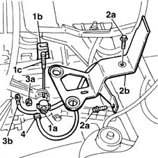
Applies to: engines: 1.6 16v; all production periods
1. Raise the ramp and undo the bolts (3a) securing the mounting (3b).
Lower the ramp.
2. Disconnect the gear selection transmission cable end (2a), remove the dust excluder (2b), then remove the flexible transmission cables unit and mounting from the relay unit.
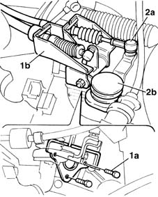
Applies to: engines: 1.6 16v; all production periods
Undo the bolts securing the bonnet lock.
1. Take the crossmember (1a) and reduce it so that the final length does not overshoot the dimensions of the car. Position the engine support crossmember (1b) and fasten it to the other crossmember.
2. Position the front support on the top crossmember, taking care not to damage the engine radiator.
3. Attach the crossmember hook to the ignition coils mounting.
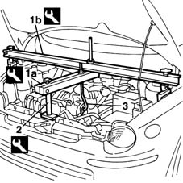
Applies to: engines: 1.6 16v; all production periods
1. Undo the top bolts securing the gearbox to the engine block.
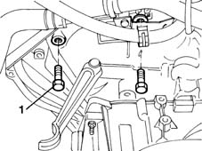
Applies to: engines: 1.6 16v; all production periods
Raise the lift about half of its travel.
7055B42 Additional FRONT WHEEL ARCH (one), left or right - R.R. (left side only)
1. Using a hammer and suitable chisel, relieve the staking on the wheel hub nut and undo it.
Use a 36 mm diameter socket suitably machined so that it fits snugly on the whole surface of the nut.
2. Undo the bolts securing the shock absorber strut.
3. Undo the nut (3a) and using tool (3b), remove the tie-rod end from the steering knuckle.
 | Name | Country |
|---|---|---|
3b | Head extractor | 1.847.035.000 |
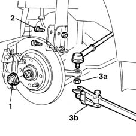
Applies to: engines: 1.6 16v; all production periods
1. Disconnect the electrical connection of the brake pad wear warning light.
2. Tip the brake disc/wheel hub assembly downwards.
3. Withdraw the drive shaft from its attachment on the wheel hub.
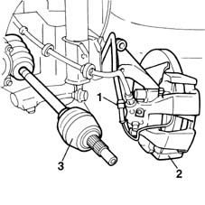
Applies to: engines: 1.6 16v; all production periods
1. Undo the bolts fixing the exhaust pipe to the catalytic converter.
2. Move aside the rubber buffer from its retaining pin.
3. Collect the gasket.
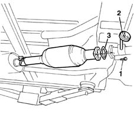
Applies to: engines: 1.6 16v; all production periods
1. Undo the bolts.
2. Remove the flywheel guard.
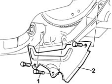
Applies to: engines: 1.6 16v; all production periods
1. Undo the bellhousing bolt to allow the gearbox support tool to be put into position.
2. Place the gearbox supporting tool (2a) on the hydraulic jack, then secure it to the gearbox using the bolt previously unscrewed and the bolt (2b).
3. Undo the bolt securing the bellhousing to the engine block.
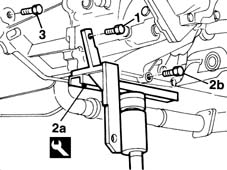
Applies to: engines: 1.6 16v; all production periods
1. Undo the bolts securing the anti-torsion reinforcement to the rigid engine mounting.
2. Undo the bolts securing the anti-torsion reinforcement to the engine block, then remove it.
3. Undo the bolt (3a) securing the rigid mounting to the rubber block and the rubber block to the crossmember; also undo the nuts (3b) securing the mounting to the gearbox.
4. Remove the rigid mounting complete with rubber block.
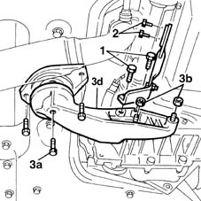
Applies to: engines: 1.6 16v; all production periods
1008A42 gear box left rigid mount - r r
1008B30 gearbox side mount flexible block - replace
1. Undo the nut securing the gearbox to the engine block.
2. Disconnect the electrical connection for the speedometer sensor.
| Name | Connector |
|---|---|---|
2 | Speedometer sensor |
Manoeuvre the hydraulic jack as appropriate in order to disengage the gearbox from the attachment studs, take care when disengaging the drive shafts from surrounding obstructions, then lower the hydraulic jack and withdraw the gearbox complete with drive shafts.
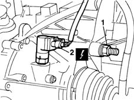
Applies to: engines: 1.6 16v; all production periods
Applies to: engines: 1.6 16v; all production periods
Refitting
RemovingPrepare the engine compartment for insertion of the gearbox, making sure that all the electrical cables, pipes, etc. are positioned well out of the way.
When fitting the gearbox/differential unit, take care not to damage the individual components.
Raise the hydraulic jack, line up the gearbox as much as possible with the seats of the two engine mountings, and offer it up to the clutch, securing it to the centring studs.
Tighten the bottom bolt and nut securing the gearbox to the engine block.
 | Fastening | Component | Ø | Value (daNm) |
|---|---|---|---|---|
- | Nut | MANUAL GEARBOX | M12 x 1.25 | 5.5 |
| Fastening | Component | Ø | Value (daNm) |
|---|---|---|---|---|
- | Bolt | MANUAL GEARBOX | M12 x 1.25 | 8.8 |
Connect the electrical connection for the speedometer sensor.
| Name | Connector |
|---|---|---|
- | Speedometer sensor |
1008B30 gearbox side mount flexible block - replace
1008A42 gear box left rigid mount - r r
Position and secure the engine reinforcement bracket.
| Fastening | Component | Ø | Value (daNm) |
|---|---|---|---|---|
- | Bolt | STIFFENING REINFORCEMENT | M8 | Support side 2.8 |
| Fastening | Component | Ø | Value (daNm) |
|---|---|---|---|---|
- | Bolt | STIFFENING REINFORCEMENT | M10 | Crankcase end 5 |
Fit the engine flywheel guard.
Tighten the bolts securing the exhaust pipe to the catalytic converter.
| Fastening | Component | Ø | Value (daNm) |
|---|---|---|---|---|
- | Bolt | EXHAUST PIPE TO ENGINE | M8 | 2.4 |
Position the rubber block on its support stud.
Position the drive shaft on the wheel hub.
Rotate the brake disc/wheel hub assembly upwards.
Connect the electrical connection of the brake pad wear warning light.
Tighten the nut securing the tie-rod end nut.
| Fastening | Component | Ø | Value (daNm) |
|---|---|---|---|---|
- | Nut | ADJUSTABLE STEERING LINKS | M10 | 4 |
Tighten the bolts securing the shock absorber strut.
| Fastening | Component | Ø | Value (daNm) |
|---|---|---|---|---|
- | Nut | FRONT HUB STEERING KNUCKLE. | M10 | 7 |
Tighten to torque the nut securing the hub to the steering knuckle.
| Fastening | Component | Ø | Value (daNm) |
|---|---|---|---|---|
- | Nut | FRONT HUB STEERING KNUCKLE. | M24 | 7 + 62° |
1. Using a hammer and suitable chisel, stake the wheel hub nut. The collar should be cut on the notch on the hub, on the side opposite that of tightening the nut, so that the safety lug prevents accidental loosening.
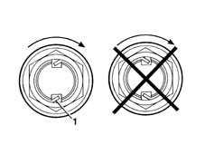
Applies to: engines: 1.6 16v; all production periods
7055B42 Additional FRONT WHEEL ARCH (one), left or right - R.R.
Tighten the top bolts securing the gearbox to the engine block.
| Fastening | Component | Ø | Value (daNm) |
|---|---|---|---|---|
- | Bolt | MANUAL GEARBOX | M12 x 1.25 | 8.8 |
Remove the crossmembers which support the engine during the gearbox removal operation.
Position the lock in its seating.
Connect the electrical connection of the speedometer sensor.
Connect the gear selection transmission cable end, refit the dust excluder and tighten the bolts securing the mounting bracket to the gearbox.
Tighten the nut securing the earth lead to the gearbox.
Tighten the bolts and secure the air cleaner mounting bracket.
Connect the clutch release cable to the attachment on the gearbox and on the lever.
- 5510C10 ignition coil/s - r+r
- 5520B10 starter motor - r+r
5530B52 Battery DRIP TRAY/SUPPORT - R.R.
1088E10 radiator cooling fan - r + r
1048A10 AIR CLEANER FILTERING ELEMENT - REPLACE
4450B10 Front WHEEL (one) - R.R.
Remove the vehicle from the ramp.
Connect the battery negative terminal.
Applies to: engines: 1.9 JTD 8V; all production periods
Removing
Refitting1016A10 sound-proofing cover - r + r
1048A10 AIR CLEANER FILTERING ELEMENT - REPLACE
5530B52 Battery DRIP TRAY/SUPPORT - R.R.
1076B50 exhaust pipe attachment to engine - r + r
1008A44 rear rigid mount - r r
4450B10 Front WHEEL (one) - R.R.
7055B42 Additional FRONT WHEEL ARCH (one), left or right - R.R.
2710A10 drive shaft with joints (one), l/h or r/h - r + r
2710A30 intermediate drive shaft - r + r with r/h drive shaft removed
1. Open the clips (1a) and disconnect the pipes (1b).
Open the single clip and separate the two air ducts.
2. Remove the flowmeter-turbocharger connecting hose from the engine.
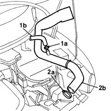
Applies to: engines: 1.9 JTD 8V; all production periods
1. Open the clips (1a) connecting the hose to the inlet manifold and air exchanger, then remove the air inlet hose (1b).
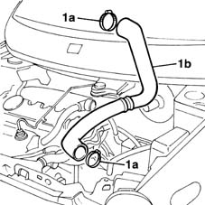
Applies to: engines: 1.9 JTD 8V; all production periods
1. Disconnect the electrical connection for the speedometer.
| Name | Connector |
|---|---|---|
1 | Speedometer sensor |
2. Undo the adjustment nut (2a) and disconnect the release cable (2b) from the lever and from its engagement on the gearbox.
3. Undo the nut (3a) and disconnect the earth lead from the gearbox (3b).
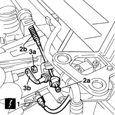
Applies to: engines: 1.9 JTD 8V; all production periods
1. Remove the flexible transmission cable ends.
2. Remove the retaining clips.
3. Withdraw the two gear selection and engagement flexible transmission cables from the mounting bracket.
4. Disconnect the electrical connection for the reversing lights.
| Name | Connector |
|---|---|---|
4 | Reversing light switch |
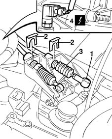
Applies to: engines: 1.9 JTD 8V; all production periods
1. Undo the three starter motor bolts.
2. Disconnect the starter motor wiring.
3. Remove the starter motor.
| Name | Connector |
|---|---|---|
2 | Starter motor |
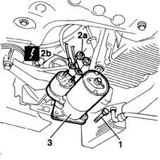
Applies to: engines: 1.9 JTD 8V; all production periods
Undo the bolts securing the lower track control arms to the suspension knuckles.
Release the lower track control arm balljoint from its seat on the steering knuckles.
1. Undo the nuts and detach the front anti-roll bar from the reaction links.
2. Undo the bolts securing the power steering box to the suspension crossmember.
Prepare a hydraulic jack under the suspension crossmember.
3. Undo the bolts securing the crossmember to the bodyshell.
4. Undo the bolts securing the intermediate crossmember to the bodyshell.
5. Remove the suspension crossmember.
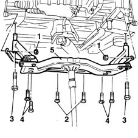
Applies to: engines: 1.9 JTD 8V; all production periods
1. Position the longitudinal crossmember for supporting the engine during the gearbox removal operations.
| Name | Country |
|---|---|---|
1 | Crossmember | 1.870.595.000 |
2. Take the second crossmember and position it transversally on the crossmember already fitted. Reduce the length of the second crossmember as appropriate so that the length does not overshoot the dimensions of the engine compartment.
| Name | Country |
|---|---|---|
2 | Crossmember | 1.860.851.000 |
Secure the two crossmembers to each other at the rear end.
3. Secure the front of the transversal crossmember to the front support on the top crossmember.
| Name | Country |
|---|---|---|
3 | Front mount | 1.860.851.001 |
4. Secure the tool to the engine using an ordinary bracket (4a) attached to the inlet manifold and a hook (4b) firmly fixed to the exhaust manifold.
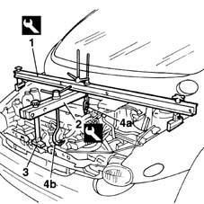
Applies to: engines: 1.9 JTD 8V; all production periods
1. Undo the top bolts securing the gearbox to the engine block.
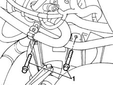
Applies to: engines: 1.9 JTD 8V; all production periods
Raise the car.
Place a container under the vehicle to collect the gearbox oil.
Undo the plug and drain the gearbox oil.
Provisionally retighten the plug.
Remove the container with the collected gearbox oil.
1. Undo the attachment bolts.
2. Remove the engine flywheel guard.
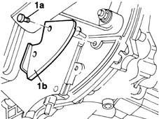
Applies to: engines: 1.9 JTD 8V; all production periods
1. Undo the bolt securing the bellhousing.
2. Position the tool for supporting the gearbox during removal.
3. Secure the tool using the bolt previously unscrewed and a bolt for anchoring the rear.
4. Undo the side bolt securing the bellhousing to the engine block.
| Name | Country |
|---|---|---|
2 | Gearbox mount | 1.860.873.000 |
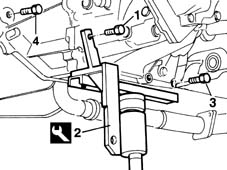
Applies to: engines: 1.9 JTD 8V; all production periods
1008A42 gear box left rigid mount - r r
1. Undo the bolts securing the gearbox to the engine block.
2. Remove the gearbox and differential.
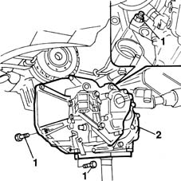
Applies to: engines: 1.9 JTD 8V; all production periods
Refitting
RemovingRefit the gearbox-differential unit in the engine compartment, making sure to line up the centring bushes and not to damage the adjacent components.
Tighten the bolts and nuts securing the gearbox to the engine block.
| Fastening | Component | Ø | Value (daNm) |
|---|---|---|---|---|
- | Bolt | MANUAL GEARBOX | M12 x 1.25 | 8.8 |
| Fastening | Component | Ø | Value (daNm) |
|---|---|---|---|---|
- | Bolt | MANUAL GEARBOX | M10 x 1.25 | 5 |
1008A42 gear box left rigid mount - r r
Remove the tool fitted previously to support the gearbox during removal.
| Name | Country |
|---|---|---|
- | Gearbox mount | 1.860.873.000 |
Retighten the bellhousing bolt, removed to fit the tool.
Fit the engine flywheel guard and secure it with its bolts.
Lower the vehicle.
Tighten to torque the top bolts securing the gearbox to the engine block.
| Fastening | Component | Ø | Value (daNm) |
|---|---|---|---|---|
- | Bolt | MANUAL GEARBOX | M10 x 1.25 | 5 |
Remove the two crossmembers and the service bracket fitted to support the engine, and move them out of the working area.
| Name | Country |
|---|---|---|
- | Crossmember | 1.870.595.000 |
| Name | Country |
|---|---|---|
- | Crossmember | 1.860.851.000 |
| Name | Country |
|---|---|---|
- | Front mount | 1.860.851.001 |
Place the suspension crossmember on a hydraulic jack.
Raise the jack and offer the crossmember up to the attachments on the bodyshell.
Tighten the bolts securing the crossmember to the bodyshell to the specified torque.
| Fastening | Component | Ø | Value (daNm) |
|---|---|---|---|---|
- | Bolt | INTERMEDIATE FRONT SUSPENSION BEAM | M12 x 1.25 | 12 |
Tighten the bolts securing the crossmember to the bodyshell to the specified torque.
| Fastening | Component | Ø | Value (daNm) |
|---|---|---|---|---|
- | Bolt | ENGINE OR ROD ANCHORAGE BEAM | M12 x 1.25 | 12 |
Remove the hydraulic jack.
Tighten the bolts securing the power steering box to the suspension crossmember to the specified torque.
| Fastening | Component | Ø | Value (daNm) |
|---|---|---|---|---|
- | Bolt | POWER STEERING BOX | M10 x 1.25 | 7 |
Tighten the nuts securing the front anti-roll bar to the reaction links to the specified torque.
| Fastening | Component | Ø | Value (daNm) |
|---|---|---|---|---|
- | Nut | FRONT ANTI-ROLL BAR | M10 x 1.25 | 7 |
Secure the track control arm balljoint to the steering knuckles.
Tighten the bolts securing the track control arms to the suspension struts to the specified torque.
| Fastening | Component | Ø | Value (daNm) |
|---|---|---|---|---|
- | Bolt | FRONT SUSPENSION LOWER LEVER BALL JOINT | M10 x 1.25 | 7 |
Fit the starter motor.
Connect the starter motor wiring.
| Name | Connector |
|---|---|---|
- | Starter motor |
Tighten the three bolts securing the starter motor to the gearbox.
| Fastening | Component | Ø | Value (daNm) |
|---|---|---|---|---|
- | Bolt | STARTER SWITCH ASSEMBLY | M8 | 2.2 |
Connect the electrical connection for the reversing lights.
| Name | Connector |
|---|---|---|
- | Air conditioning compressor electro-magnet | l20 |
Fit the two gear selection and engagement flexible transmission cables on the mounting bracket.
Fit the flexible transmission cable ends.
Fit the retaining clips.
Connect the earth lead to the gearbox.
Connect the electrical connection for the speedometer sensor.
| Name | Connector |
|---|---|---|
- | Speedometer sensor |
Connect the clutch release control cable onto the lever and gearbox.
Tighten the adjustment nut.
Fit the air inlet duct on the inlet manifold and secure it with new clips.
Fit the flowmeter-turbocharger connecting duct and secure it with new clips.
2710A30 intermediate drive shaft - r + r with r/h drive shaft removed
2710A10 drive shaft with joints (one), l/h or r/h - r + r
- 7055B64 Engine compartment DUST shield in front wheel arch (one), left or right - R.R.
4450B10 Front WHEEL (one) - R.R.
1008A44 rear rigid mount - r r
- 1076A32 exhaust rigid mount - r r
1076B50 exhaust pipe attachment to engine - r + r
1820A14 clutch pedal - adjust travel
5530B52 Battery DRIP TRAY/SUPPORT - R.R.
Topics linked from this page (17)
- 1008A42 gear box left rigid mount - r r
- 1008A44 rear rigid mount - r r
- 1008B30 gearbox side mount flexible block - replace
- 1016A10 sound-proofing cover - r + r
- 1048A10 AIR CLEANER FILTERING ELEMENT - REPLACE
- 1076B50 exhaust pipe attachment to engine - r + r
- 1088E10 radiator cooling fan - r + r
- 1820A14 clutch pedal - adjust travel
- 2710A10 drive shaft with joints (one), l/h or r/h - r + r
- 2710A30 intermediate drive shaft - r + r with r/h drive shaft removed
- 4450B10 Front WHEEL (one) - R.R.
- 5530B10 battery - r+r
- 5530B52 Battery DRIP TRAY/SUPPORT - R.R.
- 7055B42 Additional FRONT WHEEL ARCH (one), left or right - R.R.
- A20 Starter motor
- I20 Reversing light switch
- K84 Speedometer sensor